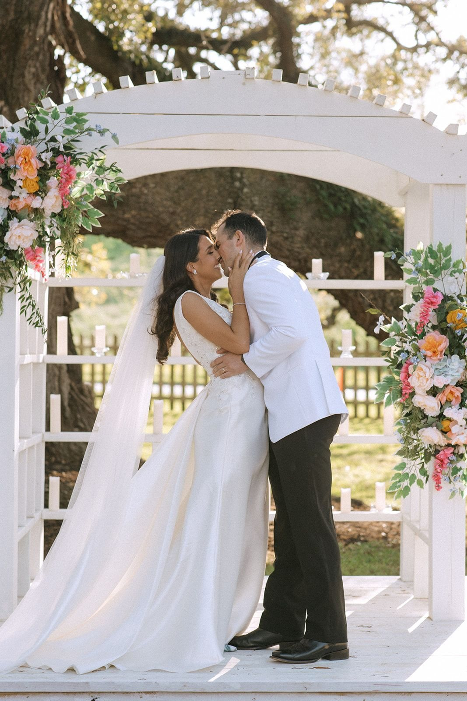
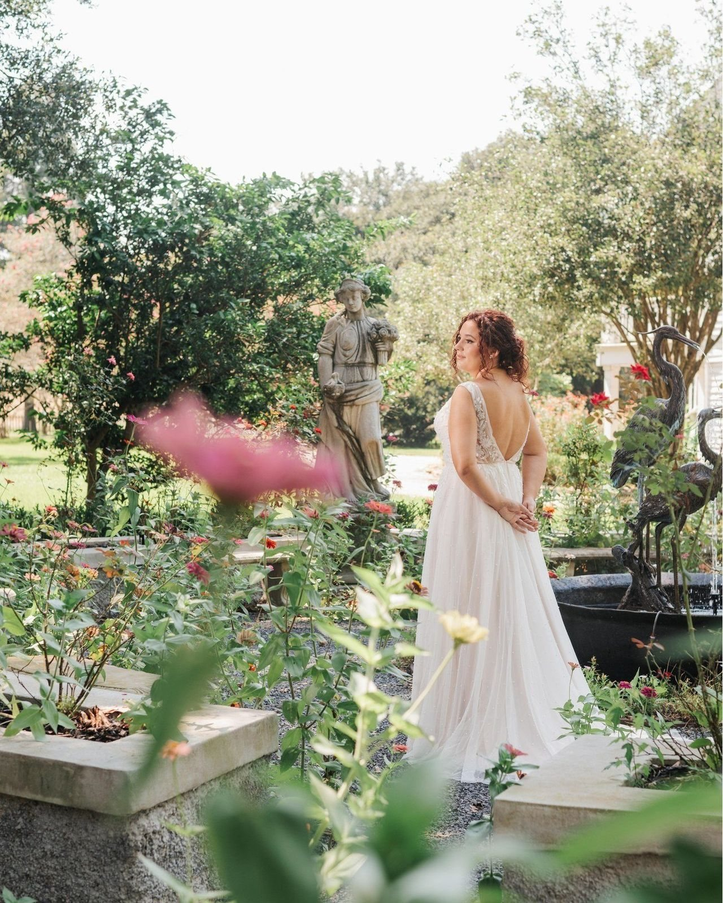
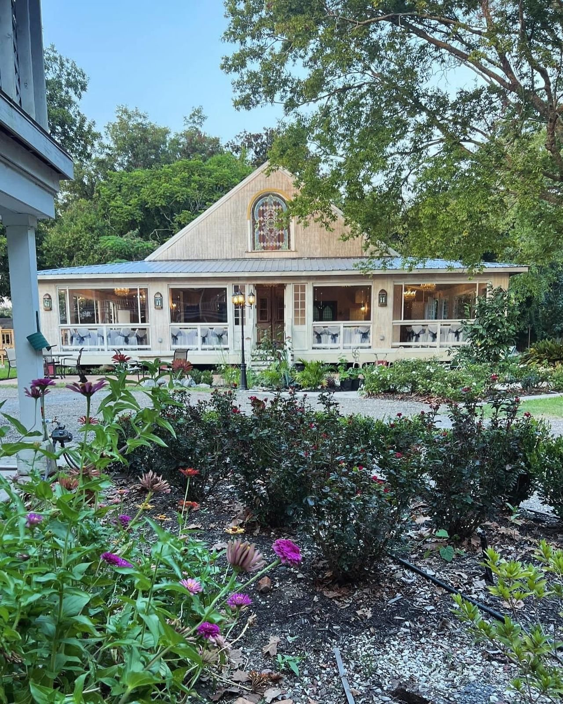
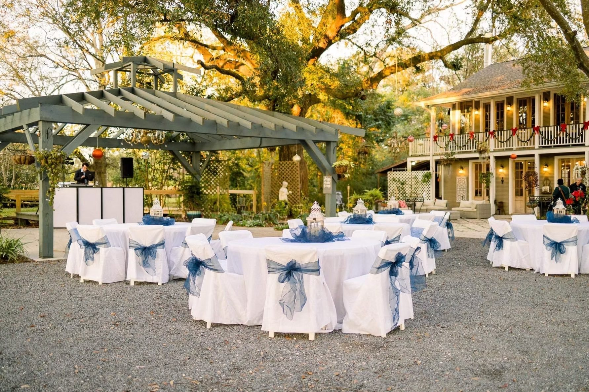
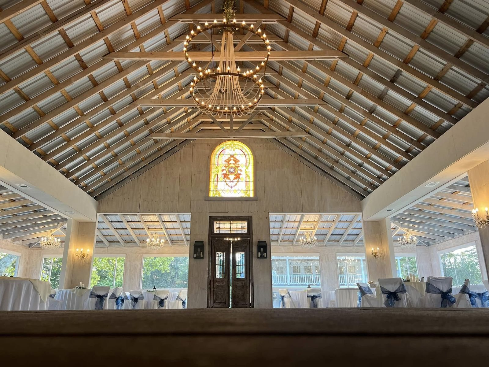

Ceremony Spaces
Five distinct settings. One unforgettable day.
Choose the Setting That
Feels Most Like You
From sweeping oak canopies to garden ceremony sites and elegant covered options, each space at Chatsworth offers a different mood while keeping the same effortless flow. Tour each setting, imagine your guests there, and choose the one that feels immediately right.

Under the Oaks
Up to 300 guests · OutdoorLouisiana's most iconic wedding backdrop. Ancient oaks — some estimated to be over 250 years old — form a natural cathedral of moss and shadow above your aisle. When the light filters through the canopy at golden hour, there is nothing else like it in the state.
- Ceremony seating for up to 300 guests
- Natural shade from centuries-old live oaks
- Stunning portrait opportunities throughout
- Seamlessly transitions to the Brass Chandelier Pavilion reception

The Rose Garden
Intimate gatherings · OutdoorSoft, romantic, and utterly Louisiana. The Rose Garden is a breathtaking setting for smaller ceremonies — where every seat feels like the front row, and the fragrance of blooms fills the air. A favorite for micro weddings and vow renewals.
- Intimate scale perfect for elopements and micro weddings
- Surrounded by seasonal blooms and lush greenery
- Ideal for garden-style editorial photography
- Adjacent to the estate's water feature gardens

The Celeste Pavilion
Up to 150 guests · Outdoor, coveredA vine-draped pergola surrounded by the estate's water features and garden paths. The Celeste Pavilion offers partial shade and the most romantic framing of any ceremony space on the grounds — the kind of setting you save to your phone and show your friends.
- Covered pergola structure for partial shade
- Surrounded by tranquil water features
- Lush greenery and climbing vines for natural décor
- Beautiful at golden hour and candlelit evenings alike

The Brass Chandelier Pavilion
Up to 300 guests · Outdoor, coveredChatsworth's grandest space — a sweeping open-air pavilion with warm Edison lighting, a bandstand, a dancefloor, and enough room for 300 of the people you love most. This is where Louisiana celebrates in style. Where the music carries across the grounds and the night feels like it could last forever.
- Capacity for up to 300 guests under cover
- Full bandstand and hardwood dancefloor
- Edison string lighting and brass chandelier accents
- Tables, chairs, linens, and décor included
- Bar service area and staging for in-house catering

The Cristella Veranda
Up to 160 guests · Indoor, climate-controlledLouisiana summers are legendary — and so is the Cristella Veranda, Chatsworth's climate-controlled indoor venue. Elegant, airy, and fully equipped, it serves as both a beautiful ceremony setting and the primary rain contingency plan so you never have to worry about the weather on your wedding day.
- Seats up to 160 guests in comfort
- Full climate control — cool in summer, warm in winter
- Primary rain contingency included in every package
- Elegant interior with natural light and full décor
- Can host full reception and ceremony indoors
Louisiana Weather Doesn’t Scare Us
Every wedding at Chatsworth comes with a built-in rain plan — no extra charge, no last-minute panic. If the weather turns, we move your ceremony into the Cristella Veranda. We typically set immediate family in rows of chairs while remaining guests are already seated at reception tables — which means less room-flipping and more celebrating. One of our couples had a full-day rain forecast. We were outside at 6am building structures. The wedding was perfect.
Read More in Our FAQConnie and David are the sweetest people and genuinely care about their guests. They met with us multiple times and worked tirelessly to ensure our vision was brought to life. The entire night could not have been more magical.
Erin & Jeremy Chatsworth Estate WeddingWalk the Grounds in Person
Walk the grounds and picture your ceremony in motionPrivate tours by appointment · Explore the grounds, the ceremony settings, and the flow of your day